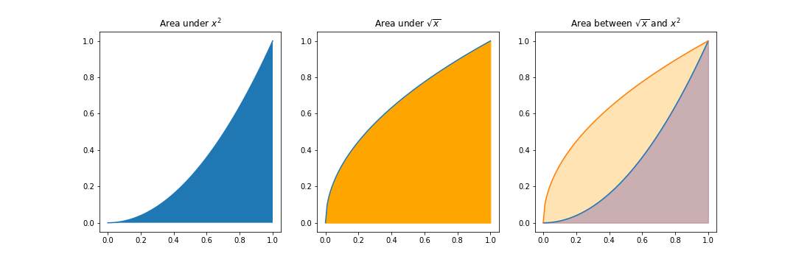

The Definite Integral
Contents
The Definite Integral#
OBJECTIVES
Interpret area problems as definite integrals
Evaluate definite integrals involving polynomial and trigonometric functions and rules
Solve problems involving Net Change using integrals and their approximations
Determine area between curves using definite integrals
import numpy as np
import matplotlib.pyplot as plt
from scipy.integrate import quad
A Definition#
We begin by interpreting the definite integral as the area between \(x = a\) and \(x = b\) under the curve determined by \(f\).
PROBLEMS
For each of the following definite integrals you are to plot the region and determine its area.
\(\int_{-1}^2 x^3 - 2x ~ dx\)
\(\int_1^4 5 - 2x + 3x^2 ~ dx\)
\(\int_0^2 x(2 + x^5) ~ dx\)
\(\int_{\pi}^{2\pi} \cos \theta ~ d\theta\)
Net Change#
The definite integral and the summations it was born from speak to the notion of it as an accumlator. In addition to area we aim to interpret a definite integral as representing the net change in a function representing a rate of change.
For example:
\(r(t)\): rate of water flowing out of tank at time \(t\); change in water in reservoir
\(v(t)\): velocity of object at time \(t\); displacement
\(\rho(x)\): the density of a rod measured length \(x\); maxx
\(p(t)\): rate of change of population at some time \(t\); change in population
EXAMPLE
A particle moves along a line with velocity at time \(t\) given by \(v(t) = t^2 - t - 6\).
What is the displacement from time \(t = 1\) and \(t = 4\).
What is the distance traveled during this time
If \(g(t)\) represents the growth of a child in pounds per year what does \(\int_2^8 g(t) ~ dt\) represent?
If oil leaks from a tank at a rate of \(r(t)\) gallons per minute at time \(t\) what does \(\int_0^{120} r(t) ~ dt\) represent?
Marginal revenue is defined as the rate of change in revenue at some number of units sold \(x\). Given a marginal revenue function \(r(x)\) what would \(\int_{100}^{500} r(x) ~ dx\) represent?
Using Data#
Often, we don’t have clear definitions of functions to use in real world situations. Instead, we have data at some point in time and measurements of the unit of interest.
import pandas as pd
t = np.arange(0, 110, 10)
v_t = [0, 38, 52, 58, 55, 51, 56, 53, 50, 47, 45]
pd.DataFrame({'t': t,'v(t)': v_t})
| t | v(t) | |
|---|---|---|
| 0 | 0 | 0 |
| 1 | 10 | 38 |
| 2 | 20 | 52 |
| 3 | 30 | 58 |
| 4 | 40 | 55 |
| 5 | 50 | 51 |
| 6 | 60 | 56 |
| 7 | 70 | 53 |
| 8 | 80 | 50 |
| 9 | 90 | 47 |
| 10 | 100 | 45 |
The table above represents the velocity of a car at some time \(t\). Use the data to create a plot of velocity at time \(t\) and approximate the distance traveled over time 0 to 100.
The space shuttle Endeavour was launched in 1992 to install a new motor in an Intelat communications satellite. The velocity for the shuttle between liftoff and the jettison of solid rocket boosters is given below. Estimate the height reachched by the Endeavour 125 seconds after liftoff.
t = [0, 10, 15, 20, 32, 59, 62, 125]
vt = [0, 185, 319, 447, 742, 1325, 1445, 4151]
pd.DataFrame({'time (t)': t, 'velocity v(t)': vt})
| time (t) | velocity v(t) | |
|---|---|---|
| 0 | 0 | 0 |
| 1 | 10 | 185 |
| 2 | 15 | 319 |
| 3 | 20 | 447 |
| 4 | 32 | 742 |
| 5 | 59 | 1325 |
| 6 | 62 | 1445 |
| 7 | 125 | 4151 |
Area Between Curves#

def f(x): return x**2
def g(x): return x**.5
Area between \(y = x^2\) and \(y = \sqrt{x}\)
Area between \(y = x\) and \(y = x^3\)
# x = np.linspace(0, 1, 100)
# fig, ax = plt.subplots(1, 3, figsize = (15, 5))
# ax[0].plot(x, f(x))
# ax[0].fill_between(x, f(x))
# ax[0].set_title(r'Area under $x^2$')
# ax[1].plot(x, g(x))
# ax[1].fill_between(x, g(x), color = 'orange')
# ax[1].set_title(r'Area under $\sqrt{x}$')
# ax[2].plot(x, f(x))
# ax[2].plot(x, g(x))
# ax[2].fill_between(x, f(x), color = 'blue', alpha = 0.3)
# ax[2].fill_between(x, g(x), color = 'orange', alpha = 0.3)
# ax[2].set_title(r'Area between $\sqrt{x}$ and $x^2$');
# plt.savefig('areabtwn.png')